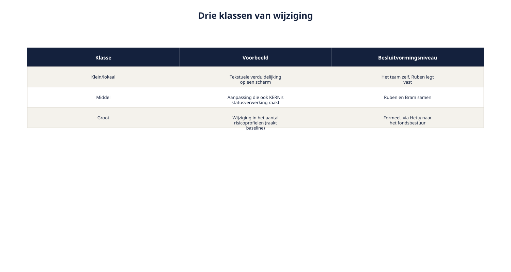
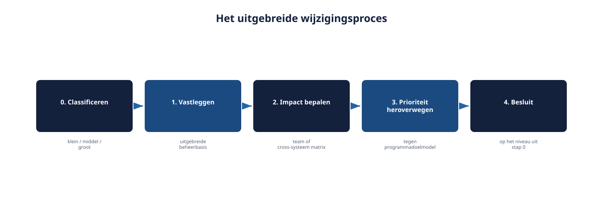
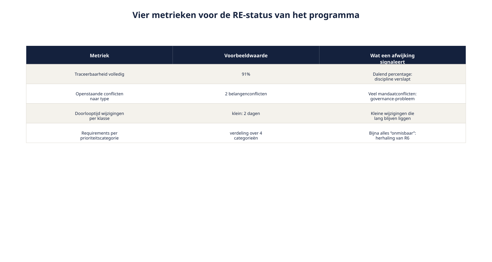

Cursus Requirements engineering · Niveau 2 (CPRE Advanced Level) · Deel 19 van 30
Wijzigingsbeheer, meten en rapporteren.
Dit deel telt twee dagdelen. Dagdeel A lost op waarom het informele wijzigingsproces van niveau 1 bij Wegwijzer vastloopt, met classificatie als oplossing: klein, middel of groot, elk met een eigen besluitvormingsniveau. Dagdeel B geeft u vier metrieken die iets zeggen over de RE-status van een programma, het verschil tussen sturen en afrekenen, en een compact rapportageformat voor de stuurgroep. Samen ronden deze twee dagdelen spanningsveld 3 — beheer over systeemgrenzen — volledig af.
9secties
±3uleestijd + werkboek
8controlevragen
3wijzigingsklassen
Positionering. Deze cursus is een voorbereiding op de CPRE Advanced Level-certificering van IREB en is uitdrukkelijk geen vervanging van het officiële syllabus- en examenmateriaal van IREB, te raadplegen via ireb.org.
Niveau 2: 11 RE-strategie kiezen → 12 Stakeholderanalyse gevorderd → 13 Techniekkeuze programmaniveau → 14 Consolidatie en conflicthantering → 15 Modeling: context/doel/gedrag → 16 Modeling: data en beslisregels → 17 Attributen, prioritering en baselines → 18 Traceerbaarheid en impactanalyse → 19 Wijzigingsbeheer, meten en rapporteren (hier) → 20 AI4RE → 21 RE@Agile → 22 Examentraining + capstone
01
Waar dit deel over gaat
⏱ 8 min
Dit deel telt, net als deel 15, twee dagdelen. Dagdeel A behandelt wijzigingsbeheer op programmaniveau; dagdeel B meten en rapporteren. Samen ronden ze de Management-module af en daarmee spanningsveld 3 — beheer over systeemgrenzen — dat in deel 17 en 18 al grotendeels is opgebouwd.
Aan het eind van deze twee dagdelen kunt u:
wijzigingen classificeren naar impact en daarmee het juiste besluitvormingsniveau kiezen;
het wijzigingsbeheerproces uit niveau 1 uitbreiden met classificatie en cross-systeem stappen;
metrieken opstellen die iets zeggen over de RE-status van een programma;
het verschil toepassen tussen meten om te sturen en meten om af te rekenen;
een compact rapportageformat opstellen voor stuurgroep en opdrachtgever.
02
Dagdeel A — Het informele proces loopt vast
⏱ 12 min
Het wijzigingsbeheer uit niveau 1 — vastleggen, impact bepalen, prioriteit heroverwegen, besluit — werkte uitstekend bij het Nabestaandenloket, waar wijzigingsverzoeken met mate binnenkwamen. Bij Wegwijzer stromen ze uit alle hoeken tegelijk binnen: servicedeskfeedback, suggesties van Marloes na elke actuariële toetsing, verzoeken van Petra na elke compliance-check, wensen van de deelnemersraad.
"Ik heb hier zeven wijzigingsverzoeken op mijn bureau liggen. Drie ervan liggen al drie weken."
"En de andere vier?"
"Die zijn gisteren doorgevoerd, omdat Marloes erop aandrong. Ik weet eerlijk gezegd niet meer of dat terecht was."
Het informele proces — Ruben behandelt ze een voor een, zoals ze binnenkomen — loopt vast: sommige wijzigingen wachten weken, andere worden overhaast doorgevoerd omdat degene die erom vraagt toevallig aandringt. Wat ontbreekt, is geen nieuw proces — de vier stappen uit niveau 1 blijven kloppen — maar een classificatie vooraf, die bepaalt hoe zwaar een wijziging moet worden behandeld en door wie.
03
Wijzigingen classificeren naar impact
⏱ 18 min
Drie klassen, elk met een ander besluitvormingsniveau.
Klein/lokaal. Binnen Wegwijzer, geen cross-systeem impact, geen doorbraak van de vastgestelde baseline. Bijvoorbeeld: een tekstuele verduidelijking op een scherm. Besluitvormingsniveau: het team zelf, met Ruben die de vastlegging verzorgt.
Middel. Cross-systeem impact, maar binnen de bestaande baseline-kaders — het raakt geen formeel goedgekeurd onderdeel. Bijvoorbeeld: een aanpassing die het KERN-team raakt maar geen nieuwe zorgplicht-toetsing vereist. Besluitvormingsniveau: Ruben en Bram samen, met de betrokken teams geïnformeerd via de cross-systeem matrix.
Groot. Raakt de baseline zelf — vereist heropening van een formeel akkoord (Petra's zorgplicht-toetsing, het fondsbestuur). Bijvoorbeeld: een wijziging in het aantal risicoprofielen na de vastgestelde baseline. Besluitvormingsniveau: formeel, via Hetty naar het fondsbestuur.

Figuur 19-1 — de drie klassen met, per klasse, een voorbeeld en het bijpassende besluitvormingsniveau
De classificatievraag
Voor elke binnenkomende wijziging, in deze volgorde:
Raakt dit de baseline (een formeel goedgekeurd onderdeel)? Zo ja: groot.
Zo nee, raakt dit een ander systeem (cross-systeem matrix, deel 18)? Zo ja: middel.
Zo nee: klein/lokaal.
Deze vraag zelf kost weinig tijd — meestal minder dan een minuut — en voorkomt dat een kleine wijziging onnodig zwaar wordt behandeld, of een grote wijziging per ongeluk licht wordt afgedaan.
Controlevragen
Uit Werkboek deel 19, Opdracht 19.1 — Wijzigingen classificeren
1Een medewerker van de servicedesk vraagt om een duidelijkere foutmelding bij een niet-ingevulde vraag. Welke classificatie?Toon antwoord
Klein/lokaal. Geen cross-systeem impact, geen baseline-raakvlak.
2Petra stelt, na een nieuwe zorgplicht-toetsing, voor om de reikwijdte van de risicowaarschuwing aan te passen — dit raakt de eerder goedgekeurde baseline. Welke classificatie?Toon antwoord
Groot. Raakt de eerder goedgekeurde baseline; vereist heropening van formele goedkeuring.
3Milan wil de interne logica van een berekening herstructureren, zonder dat dit iets verandert aan wat KERN of het vermogensbeheerplatform ontvangen. Welke classificatie?Toon antwoord
Klein/lokaal. Interne herstructurering zonder externe impact — ook al is de technische inhoud complex, de classificatie kijkt naar impact, niet naar technische zwaarte. "Klein" is dus niet hetzelfde als "makkelijk".
04
Het uitgebreide wijzigingsproces
⏱ 14 min
De vier stappen uit niveau 1 blijven het skelet, nu met de classificatie als eerste stap ervoor.
0. Classificeren — bepaalt het besluitvormingsniveau voor de rest van het proces. 1. Vastleggen — met de uitgebreide beheerbasis uit deel 17 (inclusief eigenaarschap en afhankelijkheid). 2. Impact bepalen — bij klein: binnen het team; bij middel of groot: via de cross-systeem matrix uit deel 18, inclusief eventuele formele verzoeken aan externe partijen. 3. Prioriteit heroverwegen — tegen het (programma)doelmodel, zoals in deel 17. 4. Besluit en vastlegging — door de partij die bij de classificatie is vastgesteld: team, Ruben en Bram, of het formele niveau.

Figuur 19-2 — het uitgebreide wijzigingsproces met de classificatiestap vooraf en per klasse een ander besluitvormingsniveau in stap 4
05
Toegepast op Wegwijzer (Dagdeel A)
⏱ 12 min
Drie voorbeelden, één per klasse:
Klein: een tekstuele aanpassing aan de uitleg bij Profiel B. Geclassificeerd door het team zelf, vastgelegd door Ruben, geen verdere escalatie.
Middel: Milan stelt een technische aanpassing voor die ook een kleine aanpassing in KERN's statusverwerking vereist. Geclassificeerd als middel, Ruben en Bram stemmen af, het KERN-team wordt via de matrix geïnformeerd en akkoord gevraagd.
Groot: na nieuwe inzichten wil Marloes een zesde risicoprofiel toevoegen. Dit raakt de baseline die het fondsbestuur al goedkeurde. Geclassificeerd als groot, formeel voorgelegd via Hetty, met een nieuwe baseline als mogelijk gevolg.
Wat verandert er als u iteratief werkt?
De classificatiestap past uitstekend in een sprintritme: ze kost weinig tijd en kan als vast onderdeel van backlog-refinement worden ingebouwd. Wat niet in elke sprint past, is de afhandeling van "grote" wijzigingen — die volgen het tempo van de formele besluitvorming (spanningsveld 4), niet het sprintritme van het ontwikkelteam. Een lichte classificatie aan het begin voorkomt dat een team onnodig op een formeel traject wacht voor iets wat eigenlijk klein is, én voorkomt dat een grote wijziging per ongeluk als klein wordt behandeld.
06
Dagdeel B — Waarom meten, en metrieken die iets zeggen
⏱ 18 min
Bij het Nabestaandenloket kon Hetty op elk moment aan Ruben vragen "hoe staat het ervoor", en een direct, volledig antwoord krijgen — één requirements engineer, overzichtelijke scope. Bij Wegwijzer, met meerdere teams, externe partijen en een formele goedkeuringslaag, kunnen Bram en Hetty niet bij elk detail aanwezig zijn. Ze hebben een beknopt, betrouwbaar beeld nodig van hoe de RE-aanpak ervoor staat — niet om te controleren, maar om tijdig te kunnen bijsturen.
Vier metrieken die direct aansluiten bij wat u in de voorgaande delen heeft opgebouwd.
Percentage requirements met volledige traceerbaarheidsketen (deel 9, deel 18). Een dalend percentage is een vroeg waarschuwingssignaal dat de discipline verslapt — vaak nog voordat het tot een zichtbaar probleem leidt.
Aantal openstaande conflicten, naar type (deel 14). Een hoog aantal onopgeloste mandaatconflicten wijst op een structureel probleem in de governance van het programma, niet op een toevallige opeenstapeling.
Doorlooptijd van wijzigingsverzoeken, per classificatie (paragraaf hierboven). Als "kleine" wijzigingen structureel lang blijven liggen, functioneert de classificatie niet zoals bedoeld.
Aantal requirements per prioriteitscategorie (deel 9, deel 17). Een cluster van bijna alles in "onmisbaar" is een signaal dat de prioritering zijn onderscheidende functie verliest.

Figuur 19-3 — vier metrieken elk met een voorbeeldwaarde voor Wegwijzer en wat een afwijkende waarde zou signaleren
De grondregel
Een metriek die alleen "goed" moet ogen op een dashboard, heeft geen waarde. Een metriek is pas nuttig als een afwijkende waarde een concrete, aanwijsbare vraag oproept — "waarom staat dit conflict al drie sprints open?" — en tot een besluit of actie leidt. Verzamel geen metriek waarvan u van tevoren al weet dat niemand er iets mee zou doen, ongeacht de uitkomst.
Controlevragen
Uit Werkboek deel 19, Opdracht 19.4 — Metrieken beoordelen
4Het aantal geschreven requirements per week — een metriek die aanzet tot een gesprek, of een die alleen "goed" moet ogen?Toon antwoord
Twijfelachtig. Zegt iets over volume, niets over kwaliteit of bijdrage — een hoog aantal kan net zo goed op oppervlakkig werk wijzen als op productiviteit.
5Het percentage requirements met een volledige traceerbaarheidsketen — een metriek die aanzet tot een gesprek?Toon antwoord
Goed. Een dalend percentage roept direct de vraag op "waarom", en is aanwijsbaar te verbeteren.
6De gemiddelde doorlooptijd van wijzigingsverzoeken, uitgesplitst naar classificatie — een metriek die aanzet tot een gesprek?Toon antwoord
Goed. Een oplopende doorlooptijd bij "klein" is een direct, actiegericht signaal dat de classificatie niet functioneert zoals bedoeld.
07
Meten om te sturen versus meten om af te rekenen
⏱ 16 min
Zodra een metriek wordt gebruikt om personen te beoordelen — "waarom heb jij nog conflicten openstaan" in plaats van "wat vraagt dit conflict van ons als programma" — verandert het gedrag rond die metriek. Mensen gaan de metriek managen in plaats van het onderliggende probleem: conflicten worden niet meer gemeld, prioriteiten worden kunstmatig verschoven om een cijfer goed te laten uitzien, traceerbaarheidslinks worden pro forma ingevuld zonder inhoudelijke controle.
Dit is geen hypothetisch risico — het is een bekend patroon dat ook in de Ductus-cursussen Risicomanagement en Project- en Programmamanagement terugkomt: meten om af te rekenen ondermijnt op termijn precies de kwaliteit die het beoogde te bewaken.
Praktische consequentie
Presenteer metrieken altijd met context en een uitnodiging tot gesprek, nooit als een geïsoleerd cijfer dat op zichzelf een oordeel lijkt te vellen. "Dit conflict staat al drie sprints open — wat is daar voor nodig om het te doorbreken?" werkt anders dan een rode cel in een dashboard zonder toelichting.
Figuur 19-4 — twee manieren om dezelfde metriek te presenteren — als kaal cijfer (afrekenen) versus met context en vraag (sturen)
Controlevragen
Uit Werkboek deel 19, Opdracht 19.5 — Sturen of afrekenen?
7Herschrijf naar een sturende versie: "Ruben: 3 conflicten open. Vorige maand: 1."Toon antwoord
"Er staan momenteel 3 conflicten open, tegenover 1 vorige maand — twee ervan zijn belangenconflicten die al enige tijd wachten op een besluit van het fondsbestuur. Wat is er nodig om die twee sneller tot een besluit te brengen?" De herschreven versie noemt een oorzaak of context én stelt een vraag die tot actie leidt, in plaats van een blote vergelijking met een vorige periode.
8Herschrijf naar een sturende versie: "Team Wegwijzer: traceerbaarheid 78%. Doel: 95%."Toon antwoord
"De traceerbaarheid staat op 78%, tegenover een streefwaarde van 95%. Het grootste deel van het verschil zit in recent toegevoegde backlogitems die nog niet volledig zijn gekoppeld — is er behoefte aan extra capaciteit om dit bij te werken, of is dit tijdelijk gezien de huidige sprint?"
08
Een rapportageformat
⏱ 14 min
Een compact, terugkerend format — bijvoorbeeld maandelijks voor de stuurgroep — met de vier metrieken uit paragraaf 19.6, elk met een korte duiding in plaats van kale cijfers.
Metriek
Stand
Duiding
Traceerbaarheid volledig
91%
Stabiel; de 9% ontbrekende betreft vooral nieuwe backlogitems van deze sprint, nog in verwerking
Openstaande conflicten
2 (beide belangenconflicten, geen mandaatconflicten)
Beide voorgelegd aan Hetty, besluit verwacht komende twee weken
Doorlooptijd wijzigingen (klein)
Gemiddeld 2 dagen
Binnen verwachting
Doorlooptijd wijzigingen (middel/groot)
Gemiddeld 3 weken
Iets langer dan gepland door de externe doorlooptijd bij het vermogensbeheerplatform (deel 18)
Figuur 19-5 — het volledige rapportageformat als voorbeeld, met de duiding-kolom nadrukkelijk aanwezig
Dit format is bewust kort. Het doel is niet compleetheid — dat is waar de matrices en baselines uit deel 17 en 18 voor dienen — maar een startpunt voor een gesprek met de stuurgroep, waarin zij kunnen doorvragen op wat hen het meest aangaat.
Wat verandert er als u iteratief werkt?
Metrieken sluiten vaak aan bij het sprint- of releaseritme van het team zelf (bijvoorbeeld: traceerbaarheidspercentage elke sprint bijgewerkt), terwijl de rapportage aan de stuurgroep een lagere frequentie volgt (maandelijks, of bij releasegrenzen). Dit is dezelfde tweedeling als bij baselines (deel 17) en cross-systeem afstemming (deel 15, 18): licht en continu op teamniveau, zwaarder en periodiek op programmaniveau.
09
Spanningsveld 3 afgerond
⏱ 10 min
Met deze twee dagdelen is spanningsveld 3 — beheer over systeemgrenzen — volledig gedekt: de uitgebreide beheerbasis en baselines (deel 17), traceerbaarheid en impactanalyse over systeemgrenzen (deel 18), en nu geclassificeerd wijzigingsbeheer met meten en rapporteren die het geheel zichtbaar houden voor wie er niet dagelijks middenin zit (dit deel).
De Management-module (Practitioner) is hiermee compleet. Deel 20 staat op zichzelf: AI-ondersteund requirements engineering — een deel dat op elk moment in de cursus gevolgd kan worden. Deel 21 opent daarna de RE@Agile-module en daarmee spanningsveld 4: twee kloksnelheden.
Verder met deel 20
Wijzigingsbeheer, meten en rapporteren op programmaniveau sluiten spanningsveld 3 af. Deel 20 staat op zichzelf en behandelt AI-ondersteund requirements engineering — een onderwerp dat zowel bij Wegwijzer als daarbuiten steeds vaker om verantwoorde toepassing vraagt.